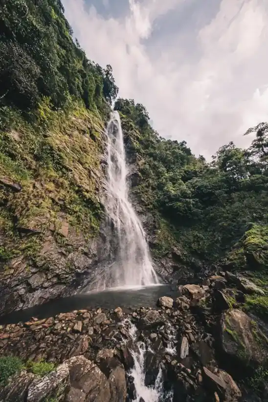
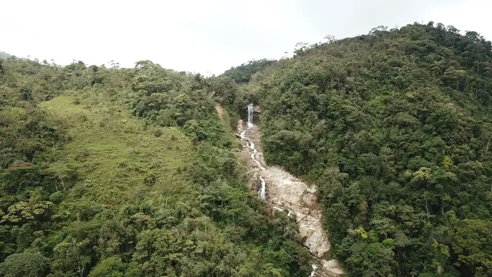
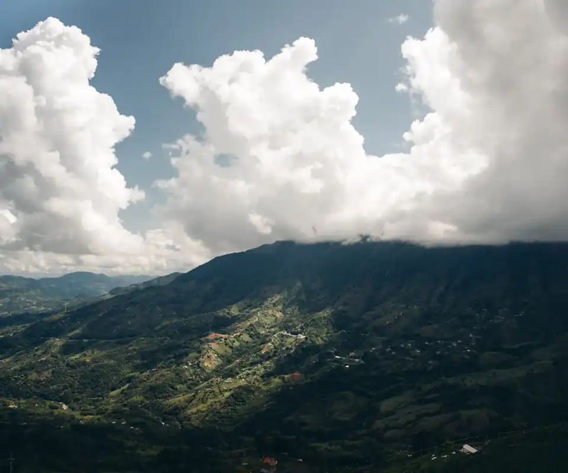
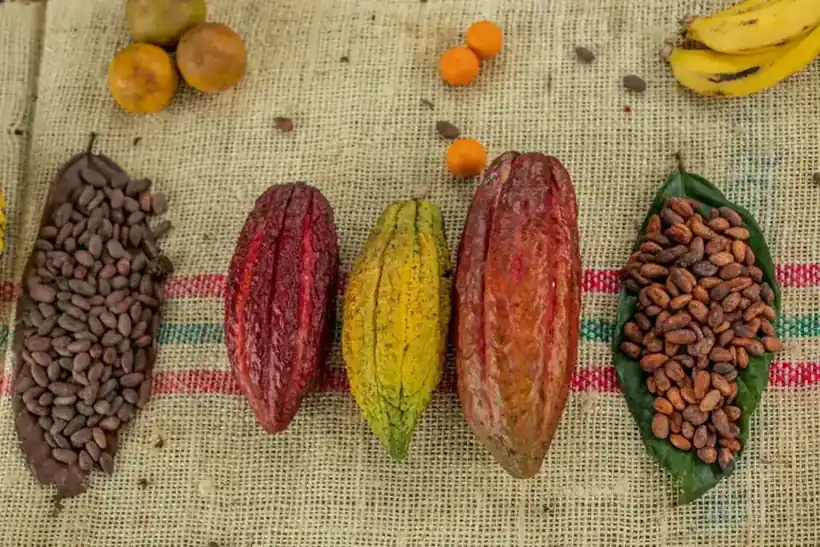
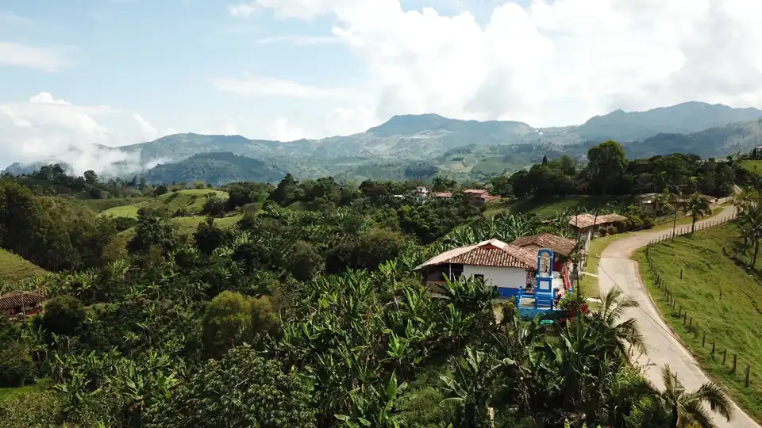
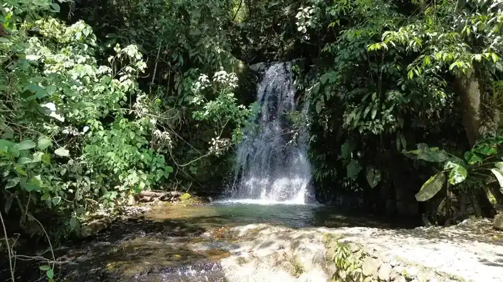

Home / Expeditions
Expeditions
Private tours with a local guide in Cocorná. Choose by type of adventure.
Hikes
Waterfalls, pools, jungle and mountains, with a local guide. All of them are demanding.
1 day


Valle de las Cascadas
Adventure 3/5La PiñuelaLa Piñuelafrom 160,000 COP pp→Most popular
Valle de las Cascadas
Adventure 3/5La PiñuelaLa Piñuelafrom 395,000 COP pp→
Valle de las Cascadas
Adventure 3/5La PiñuelaLa Piñuelafrom 830,000 COP pp→
Jungle Trekking Melcocho
Adventure 4/5El RetiroEl RetiroAsk for the price→3 days
Jungle Trekking Melcocho
Adventure 4/5El RetiroEl RetiroAsk for the price→
Teta de la Vieja
Adventure 4/5Ask for the price→
Melcocho & Sonsón páramo
Adventure 5/5El RetiroSonsónAsk for the price→Water sports
Rafting on the rivers of Cocorná, from calm water to whitewater.


Extreme adventures
Air and rock: paragliding and waterfall abseiling.

Culture & countryside
Rural life in Cocorná: panela, coffee, cacao and horses.
Half day

Sugarcane Mill & Waterfalls
Adventure 3/5from 250,000 COP pp→
Cacao tour
Adventure 1/5from 185,000 COP pp→
Coffee tour
Adventure 1/5from 290,000 COP pp→
Horseback riding
Adventure 2/5from 220,000 COP pp→
Panela, waterfalls & massage
Adventure 1/5Ask for the price→Transport
We take you to where the adventure starts: by 4x4, private van or chiva bus. We arrange it together with your plan.

Accommodation
Ideas for where to stay in Cocorná: farms, our lodge or a hotel. We book it together with your plan.


Basecamp packages
Accommodation and activities in one package, with Cascadia Lodge as your base.